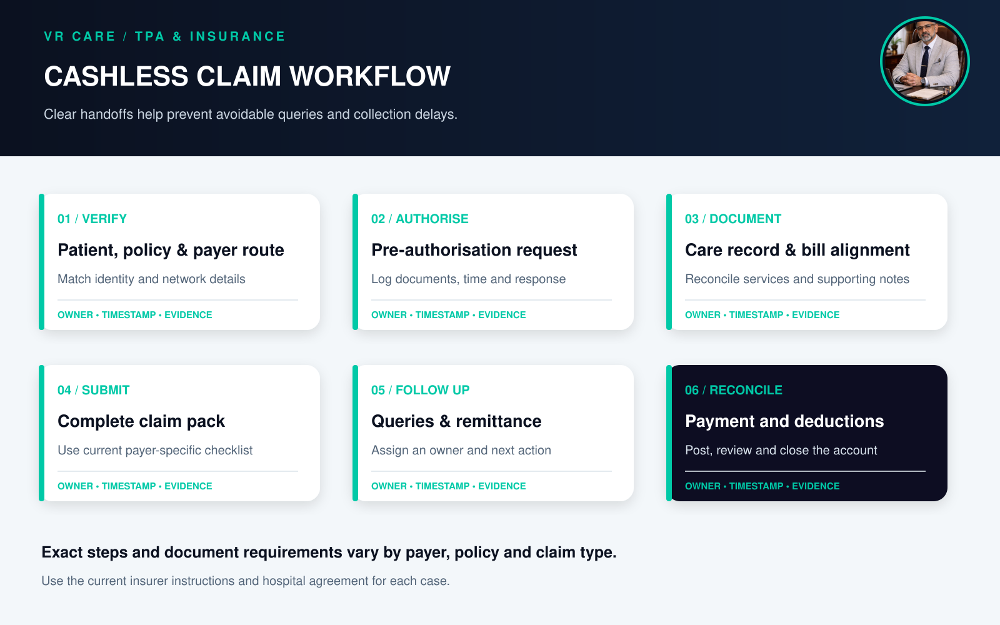
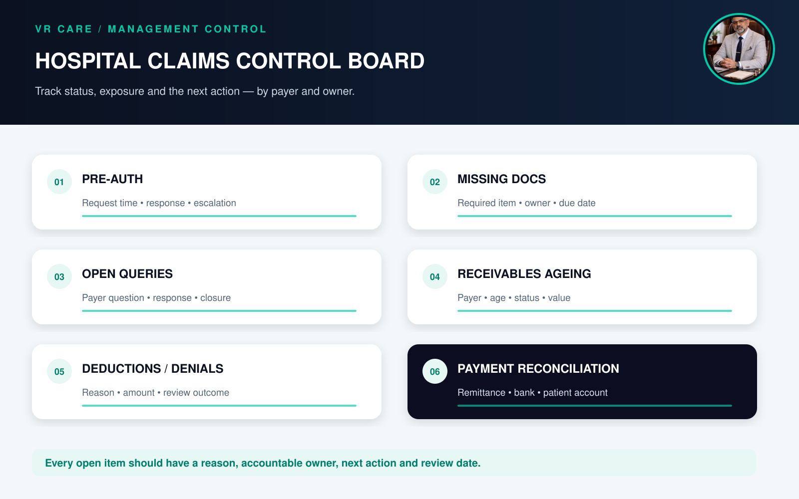

TPA and Insurance Claims: Common Hospital Process Gaps That Delay Collections
A hospital can reduce avoidable TPA and insurance claim delays by confirming payer details early, assigning an owner to pre-authorisation, keeping clinical and billing documents consistent, submitting a complete claim pack, tracking every open query, and reconciling remittances and deductions promptly. A Third Party Administrator (TPA) may support claim servicing for an insurer, but claim decisions and coverage depend on the insurer, the policy terms and the applicable arrangement. Hospitals should communicate transparently with patients and never promise approval or coverage before it is confirmed.
- Why TPA and insurance claims need an end-to-end process
- What is the hospital TPA claim process?
- Nine common process gaps that delay collections
- A practical hospital claim-control checklist
- Hospital TPA and insurance claim KPIs
- How hospital software can support claims management
- The management takeaway
- Frequently asked questions
Why TPA and insurance claims need an end-to-end process
A claim is not a single form sent after discharge. It is a chain of handoffs: patient registration, policy and network checks, pre-authorisation where applicable, care documentation, interim updates, final bill preparation, claim submission, query resolution, payment posting and account reconciliation.
When those handoffs are split across admission, clinical departments, medical records, billing, the TPA desk and finance, a small gap can become a delayed collection. The team may discover a missing document only after submission, a changed treatment plan may not be reflected in an update, or a payer deduction may remain unreviewed because nobody owns the next step.
A consistent workflow gives each stage a responsible role, a time stamp, a checklist and an escalation path. It also supports better patient communication: a cashless request is a request for authorisation, not a guarantee that every charge will be covered.
What is the hospital TPA claim process?
The hospital TPA claim process is the set of hospital-side steps used to verify and coordinate a patient's insurance or cashless case, send the information required by the insurer or its TPA, respond to queries, and track the claim through settlement or other closure. The exact requirements can vary by insurer, policy, network agreement, treatment and claim type. Use the current payer instructions and contract rather than assuming one checklist applies to every case.

1. Verify identity, policy and payer route
At registration, confirm patient identity, policy/member details, insurer and TPA details where applicable, network status and the intended payment route. Check that names, dates and identifiers are consistent across the registration record and claim documents. Explain the hospital's estimate, deposit and patient-payable process using approved language. Do not represent an eligibility check as final claim approval.
2. Submit pre-authorisation information accurately
For cashless cases requiring pre-authorisation, prepare a legible and internally checked request with the clinical information and supporting records requested by the payer. Assign one owner to record when it was sent, which channel was used, the response received and the next action. If the clinical plan or estimated cost changes, follow the payer's update process and document the communication.
Under IRDAI's Health Insurance FAQ, cashless pre-authorisation requests are to be decided immediately and no later than one hour after receipt; final bill authorisation is to be granted within three hours of receiving the hospital's discharge authorisation request. These are insurer turnaround requirements, not a guarantee of coverage or approval for every item. Hospitals should send clear, complete requests promptly and escalate through the agreed channel when the applicable timeline is exceeded.
3. Keep the care record and bill aligned
During admission, make sure the clinical record supports the care delivered and the bill reflects services actually provided. Reconcile orders, procedures, diagnostics, pharmacy issues and returns, consumables, packages and approved exceptions before final billing. Resolve discrepancies through the hospital's documented process. Do not add unsupported charges or alter clinical documentation to fit a payer rule.
NABH's 6th Edition Hospital Accreditation Standards include expectations for medical records to contain information such as reasons for admission, diagnosis, care plan, assessments, investigations, care provided, procedures and a signed discharge summary. They also call for confidentiality, integrity and security of records. Strong records serve continuity and quality of care as well as claim review.
4. Prepare and submit a complete claim pack
Before submission, use a payer-specific checklist based on the latest contract and instructions. Depending on the claim, requested items may include the final bill, discharge summary, investigation reports, prescriptions, operative notes, authorisation records and other supporting documents. Confirm that documents belong to the correct patient and admission, are readable, signed where required, and consistent in dates and amounts. Maintain evidence of submission and a copy of the exact pack sent.
5. Track queries, deductions and settlement
Log every claim with a unique patient/account reference, payer, admission and discharge dates, amount submitted, submission date, current status, query or deduction reason, responsible owner and next follow-up date. Work queries to closure and record exactly what was sent. When a remittance arrives, post it to the correct account and compare the amount paid with the amount expected under the relevant policy, contract and settlement communication. Route disputed or unclear deductions for review and keep patient balances transparent.
IRDAI states that insurers should call for necessary claim documents at one time rather than piecemeal, subject to the applicable rules and exceptions such as suspected fraud. The insurer is responsible for communicating a denial or repudiation with reasons and the relevant policy conditions. Hospitals can help by maintaining a clear document log and directing policy-coverage disputes through the appropriate insurer process.
Nine common process gaps that delay collections
- Incomplete registration or payer details: inconsistent names, policy numbers or payer routing create avoidable clarification work.
- Unclear ownership of pre-authorisation: requests sit between admission and the TPA desk without a named person or escalation point.
- Late or incomplete clinical updates: a material change in care or estimated cost is not shared through the required payer channel.
- Clinical record and bill mismatch: dates, procedures, quantities, packages or supporting notes do not reconcile.
- One generic checklist for every payer: teams rely on an old or universal document list despite differing current requirements.
- Poor submission evidence: staff cannot confirm what was submitted, when, and through which portal or channel.
- Queries without an owner or deadline: emails and portal requests remain open because the next action is not assigned.
- Deductions posted without analysis: short payments are treated as closed without recording the reason, validating it or deciding whether to appeal.
- Receivables reviewed only as one total: leadership cannot distinguish new claims, pending queries, disputed deductions and long-outstanding balances.
A practical hospital claim-control checklist
| Control point | Minimum record or check | Suggested owner |
|---|---|---|
| Registration | Patient and payer details verified against available documents | Registration / TPA desk |
| Pre-authorisation | Request time, documents sent, response and escalation recorded | TPA desk |
| During care | Required clinical updates and supporting records maintained | Treating team / medical records |
| Final bill | Charges reconciled to documented services, tariff and package rules | Billing / department owner |
| Submission | Payer-specific checklist, copy of pack and submission proof | Claims desk |
| Query follow-up | Query, owner, due date, response and closure evidence | Named claim owner |
| Payment posting | Remittance matched to patient account and bank receipt | Finance / billing |
| Deduction review | Reason, value, contract/policy reference and decision documented | Finance / TPA lead |
| Receivables review | Payer-wise ageing, status, value and next action | Finance leadership |
The checklist should be adapted to the hospital's payer agreements and current requirements. It is an operational aid, not a substitute for policy terms, insurer instructions or legal advice.

Hospital TPA and insurance claim KPIs
Choose measures that show both speed and quality. Define the start and end points before setting targets or comparing periods.
- Pre-authorisation response tracking: elapsed time from submission to response, segmented by payer and request type. Use this to identify escalation patterns; the insurer's regulatory turnaround requirements remain distinct from hospital processing time.
- Claim-ready-to-submission time: time from the hospital's defined "claim complete" point to successful submission.
- First-pass completeness: share of submitted claim packs accepted for processing without a request for missing information, using a consistent definition.
- Query rate and query closure time: frequency of payer queries and time to provide a documented response.
- Denial and deduction rate: count or value of claims denied or reduced, segmented by recorded reason and payer.
- Receivables ageing by payer and status: outstanding value grouped by age, with pending, queried, disputed and approved-but-unpaid items separated.
- Payment reconciliation lag: time from receipt of remittance/payment evidence to accurate posting and account reconciliation.
Avoid a single "claim rejection" number without context. A useful review asks which step failed, whether the reason is within hospital control, what financial amount is affected and who owns corrective action.
How hospital software can support claims management
Hospital software can make the process visible by connecting registration, billing, medical records, payer details, pre-authorisation logs, claim documents, query tasks, remittances and receivables. Look for role-based access, audit trails, timestamped status changes, document version control, payer-wise ageing, approval workflows and reports that can be reconciled with patient accounts and finance records.
Software is most useful when teams agree on workflow ownership and data definitions first. A portal or dashboard cannot resolve a missing clinical note, an outdated payer checklist or an unclear deduction policy on its own.
The management takeaway
Reliable TPA and insurance collections depend on the whole hospital process, not only the claims desk. Confirm details early, preserve accurate records, submit complete payer-specific documentation, assign every query and deduction an owner, and reconcile each payment to the patient account and books. Keep patient communication clear whenever coverage or patient liability is still being determined.
VR Care's hospital operations and management audit can review workflows, documentation, billing and revenue controls as part of a broader operational improvement effort. Related reading: hospital profitability and revenue leakage and hospital accounts and revenue cycle management.
Frequently asked questions
What is a TPA in hospital insurance claims?
A Third Party Administrator (TPA) is an entity that may provide claim-related servicing for an insurer. Its role depends on the arrangement. The insurer and policy terms determine coverage and claim decisions; patients should use the insurer's current policy and grievance information for coverage questions.
What is the TPA claim process in a hospital?
It commonly includes verifying patient and payer details, submitting pre-authorisation information where applicable, maintaining supporting records, preparing a complete final claim pack, responding to queries, tracking status and reconciling settlement. Exact steps vary by payer and claim type.
Why do hospital insurance claims get delayed?
Common operational causes include mismatched details, incomplete or unreadable documents, late submissions, inconsistent clinical and billing records, queries without an owner, missing submission evidence and unresolved payment reconciliation. A delay or deduction can also depend on policy terms or payer review, so hospitals should record the stated reason rather than assume the cause.
What documents are required for a hospital insurance claim?
The exact documents depend on the insurer, policy, treatment and claim type. Hospitals should follow the current payer instructions and contract-specific checklist. Commonly requested supporting records may include a final bill, discharge summary, investigation reports, prescriptions and procedure records, as applicable.
What is the IRDAI turnaround time for cashless authorisation?
IRDAI's Health Insurance FAQ says cashless pre-authorisation should be decided immediately and within one hour of receipt, and final bill authorisation within three hours of receiving the hospital's discharge authorisation request. These timelines describe insurer decisions and do not guarantee that a particular request or charge will be approved.
Who communicates a claim denial or repudiation?
IRDAI says the insurer communicates a denial or repudiation, with reasons and reference to relevant policy conditions. The hospital can provide requested records and help the patient understand the hospital's billing documents, while policy grievance questions should be directed through the insurer's stated process.
Which KPIs help improve hospital TPA claims management?
Useful measures include claim-ready-to-submission time, first-pass completeness, query closure time, denial and deduction reasons, payer-wise receivables ageing and payment reconciliation lag. Define each measure and review trends by payer and workflow stage.